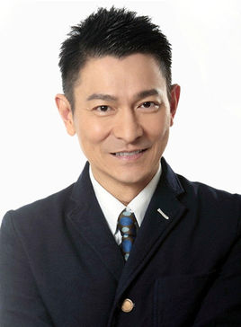

刘德华（Andy Lau），1961年9月27日出生于中国香港，中国香港男演员、歌手、作词人、制片人。
1981年出演电影处女作《彩云曲》 [1] 。1983年主演的武侠剧《神雕侠侣》在香港获得62点的收视纪录 [2-3] 。
1991年创办天幕电影公司 [4] 。1992年，凭借传记片《五亿探长雷洛传》获得第11届香港电影金像奖最佳男主角提名 [5] 。
1994年担任剧情片《天与地》的制片人 [6] 。2000年凭借警匪片《暗战》获得第19届香港电影金像奖最佳男主角奖 [7] 。
2004年凭借警匪片《无间道3：终极无间》获得第41届台湾金马奖最佳男主角奖 [8] 。2005年获得香港UA院线颁发的全港最高累积票房香港男演员”奖 [9] 。
2006年获得釜山国际电影节亚洲最有贡献电影人奖 [10] 。2011年主演剧情片《桃姐》，并凭借该片先后获得台湾金马奖最佳男主角奖、香港电影金像奖最佳男主角奖 [11] ；
同年担任第49届台湾电影金马奖评审团主席 [12] 。2017年主演警匪动作片《拆弹专家》 [13] 。
1985年发行首张个人专辑《只知道此刻爱你》 [14] 。1990年凭借专辑《可不可以》在歌坛获得关注 [15] 。

1994年获得十大劲歌金曲最受欢迎男歌星奖。1995年在央视春晚上演唱歌曲《忘情水》 [16] 。
2000年被《吉尼斯世界纪录大全》评为“获奖最多的香港男歌手” [17] 。
2004年第六次获得十大劲歌金曲最受欢迎男歌星奖。
2016年参与填词的歌曲《原谅我》正式发行 [18] 。
1994年创立刘德华慈善基金会 [19] 。
2000年被评为世界十大杰出青年 [20] 。
2005年发起亚洲新星导计划 [21] 。
2008年被委任为香港非官守太平绅士 [22] 。
2016年连任中国残疾人福利基金会副理事长